A useful statistical measure is the diagonal or the trace of the inverse of
a matrix. This has myriad applications from quantum mechanics and Lattice QCD
to uncertainty quantification and data mining.
Most commonly the matrix  or its Hermitian part
or its Hermitian part
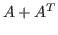
would be Hermitian positive definite and very large and sparse (large dimensionFor such large matrices, the current state-of-the-practice is to use a Monte Carlo method known as Hutchinson's which is based on the fact that the trace can be obtained as the expected value of
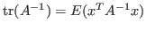
. Therefore, a simple averaging algorithm can be implemented where random vectors are chosen and linear systems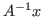
are solved with an iterative method. The method converges as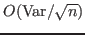
, where the variance of the estimator,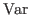
, is known to be minimized by choosing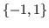
(in the real case). This variance is given by
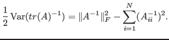
The two computational bottlenecks are (a) for ill conditioned systems iterative
methods may take many steps and (b) thousands of linear systems are needed just
to get two digits of accuracy in the trace.
In earlier work, we showed how approximate eigenvectors and eigenvalues can
be used to deflate, and thus remove the ill conditioning in linear systems
with multiple right hand sides.
We also developed Hierarchical Probing, a method to systematically produce
the vectors  in Hutchinsons's method so that variance is reduced significantly.
In this talk we focus on the effect of deflation on reducing the variance,
and how it can complement Hierarchical Probing to achieve substantial further
improvements.
in Hutchinsons's method so that variance is reduced significantly.
In this talk we focus on the effect of deflation on reducing the variance,
and how it can complement Hierarchical Probing to achieve substantial further
improvements.
Assume for simplicity that we want to find tr( ) (not tr(
) (not tr(
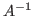
)). Consider its singular value decomposition,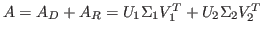
where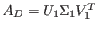
corresponds to the largest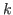
singular triplets of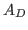
is trivial to compute direclty. Thus, using the appropriate projector, we can apply Hutchinson's method on the deflated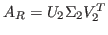
, hoping this has lower variance. We prove that
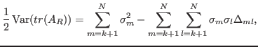
where
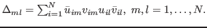
To achieve variance reduction we need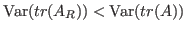
. Contrary to low rank matrix approximations, the term subtracting the double sum implies that deflation may not achieve this. In fact, it is easy to come up with such examples. The presence of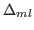
in the formula complicates a precise characterization of when we can expect variance reduction. A crude analysis shows that reduction is guaranteed if the singular spectrum decreases geometrically as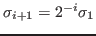
. However, this is pessimistic.
To bypass the complications caused by
,
we assume that  and
and  are standard random unitary matrices, i.e.,
distributed with the Haar probability measure.
For large size matrices this is a reasonable assumption, and it is also
theoretically supported for matrices in Lattice QCD.
Based on an analysis of the moments of the elements of these matrices, we have
derived an expression for the expected variance of the deflated estimator.
Define the mean and the variance of the
are standard random unitary matrices, i.e.,
distributed with the Haar probability measure.
For large size matrices this is a reasonable assumption, and it is also
theoretically supported for matrices in Lattice QCD.
Based on an analysis of the moments of the elements of these matrices, we have
derived an expression for the expected variance of the deflated estimator.
Define the mean and the variance of the
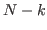
singular values of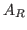
,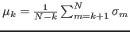
, and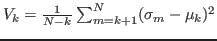
, respectively. Then, for non-Hermitian matrices it holds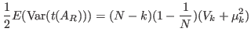 |
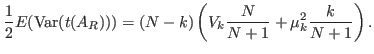 |
The second contribution of the paper is that we observed a synergistic action between deflation and hierarchical probing. Specifically, we analyzed the geometric effect of the two methods and observed that while hierarchical probing removes, by design, the error in neighboring lattice nodes at increasing distances, deflation is not good at that but excels in removing error in long lattice distances. In our experiments on a very large Lattice QCD problem, while deflation alone gave a small improvement, Hierarchical Probing reduced variance by an order of magnitude, and combining the two methods gave us an additional order of magnitude; an overall speedup of more than 200.